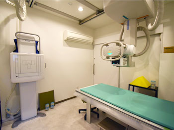
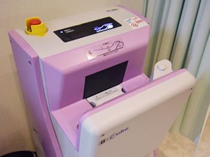

整形外科
整形外科では、骨・関節・筋肉・靭帯・神経などの「運動器」に生じた痛みやしびれ、外傷を診療します。
頭と内臓以外はすべて整形外科の分野ですので、気になる症状があればお気軽にご相談ください。
また、当院では労災保険や交通事故（自賠責保険）にも対応しています。
整形外科疾患一覧
上肢の症状
当院でできる検査
超音波（エコー）検査
超音波を患部に当てて体の中を映し出し、筋肉や関節の動きや状態をその場で確認できます。
アキレス腱断裂、肉離れ、足関節捻挫（靭帯損傷）、ガングリオンなどに有効です。

X線（レントゲン）検査
X線で骨の状態を撮影し、骨折や変形がないかを調べる基本的な検査です。
骨折、腫瘍、外傷、感染症また、関節リウマチや変形性関節症などの診断に有効です。

骨密度測定
SEXA法（前腕の骨密度測定）・DEXA法（腰椎、大腿骨頚部の骨密度測定）があり、骨を構成しているカルシウムなどの量を測り、骨の強度を調べる検査です。
血液検査も一緒に行うとさらに詳しく調べることが可能です。
